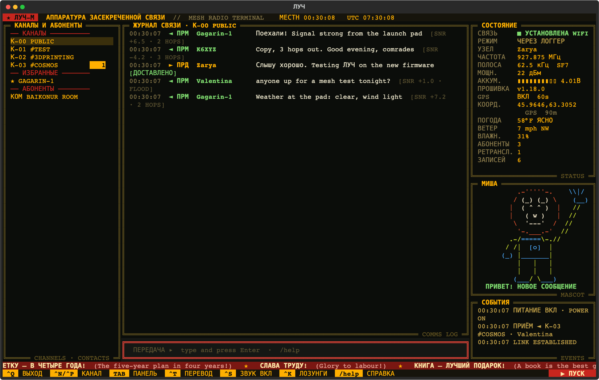

Privet, comrade! I am Misha, cosmonaut first class and mascot of ЛУЧ. Today I explain you this very fine radio terminal.
ЛУЧ talks to your MeshCore LoRa radio over Bluetooth, USB or Wi-Fi, writes every message into the logbook, and looks like the console of a Soyuz. No internet, no phone tower, only radio. As it should be.
github.com/mojeska/luch · MIT licence · Python
On the control panel all is in Russian, of course. Is our way. But Misha is not monster: press Ctrl+T and every heading, button and slogan becomes English. Yankee mode. Press again for Russian. ЛУЧ remembers your choice, and messages from comrades stay as they wrote them.

Misha: Left side: channels, favourite comrades with ★, and other comrades. Middle: the comms log, with signal strength and how many hops each message travelled. Right side: radio status, GPS position and weather, me, and events. Bottom: slogans, for morale.
Bluetooth, USB cable, or Wi-Fi on firmware 1.18 boards like the Heltec V3. Wi-Fi is best: background logger holds the radio, your phone keeps Bluetooth.
Each radio has its own SQLite logbook. The background logger runs at login (launchd on Mac, systemd on Linux), so nothing is missed while screen is closed. /search finds anything.
/join #name for hashtag channels, private ones with key. /fav sets radio's own favourite flag, so comrade is never pushed out of full contact list. /tag for your own labels.
On radio with GPS, /gps on 60 shows where you are, and current weather from Open-Meteo. No GPS? /home sets a home position.
ЛУЧ compares radio firmware with newest MeshCore Companion release, and shows ▲ NEW when update is ready.
Chiptune chirps for messages, deliveries, link up and down. Ctrl+S for silence. And the ПУСК button, see below. Very important.
Misha: I live in the status column and I have opinions about your radio. My suit is yellow, like a cosmonaut in the old film Red Planet, where a bear like me ran the diagnostic screen. ЛУЧ drew me new, from scratch.
| When | Misha does | Misha says |
|---|---|---|
| All is normal | Stands and blinks | ВСЁ В НОРМЕ · all nominal |
| Message arrives | Waves | ПРИВЕТ! НОВОЕ СООБЩЕНИЕ · hello, new message |
| Your DM is delivered | Points to sky | ДОСТАВЛЕНО! · delivered |
| Link lost | Holds helmet | НЕТ СВЯЗИ · no link |
| Battery low | Holds helmet | СЛАБОЕ ЗАЖИГАНИЕ · weak ignition |
| Anthem plays | Salutes | СЛАВЬСЯ, ОТЕЧЕСТВО! · glory to the Fatherland |
Too much Misha? Ctrl+B hides me. I am not offended. Much.
Misha: You need Python 3.11 or newer and radio with MeshCore Companion firmware. Mac and Linux both work.
git clone https://github.com/mojeska/luch.git && cd luch python3 -m venv .venv && .venv/bin/pip install -e . .venv/bin/luch -d MeshCore-MyNode # Bluetooth .venv/bin/luch --port auto # USB .venv/bin/luch --tcp 192.168.1.50 # Wi-Fi .venv/bin/luch service install -d MeshCore-MyNode # background logger
Arch or Omarchy: sudo pacman -S bluez bluez-utils, pair radio once with bluetoothctl, and add yourself to the uucp group for USB. Full details in the README.
| Key / command | What it does |
|---|---|
| Ctrl+T | Yankee mode: screen text Russian ⇄ English |
| Enter | Transmit on selected channel or contact |
| /dm name | Direct line to a comrade |
| /join #name · /leave | Join or leave a channel |
| /fav · /tag name tag | Favourite on the radio · LUCH-only tag |
| /gps on 60 · /home lat lon · /weather | Position and weather |
| /search words | Search the whole logbook |
| /name · /reboot · /cli · /firmware | Radio housekeeping |
| Ctrl+N / Ctrl+P | Next / previous conversation |
| Ctrl+S · Ctrl+K · Ctrl+B | Sound · slogan ticker · Misha, on and off |
| Ctrl+L or ▶ ПУСК | Launch countdown, then the anthem. Esc aborts |
| Ctrl+Q | Quit. Misha says goodbye |
Misha: In the corner of ЛУЧ there is red button. ПУСК means "launch". You press it, ten seconds countdown, and then the anthem plays in 8-bit, music of Alexandrov from 1939, and I salute. Here you may try it. Is safe. Nothing is launched. Probably.